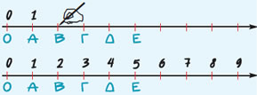

| Διαλέγουμε αυθαίρετα ένα σημείο Ο της ευθείας, που το λέμε αρχή, για να παραστήσουμε τον αριθμό 0. Μετά δεξιά από το σημείο Ο διαλέγουμε ένα άλλο σημείο Α, που παριστάνει τον αριθμό 1. Τότε, με μονάδα μέτρησης το ΟΑ, βρίσκουμε τα σημεία που παριστάνουν τους αριθμούς: 2, 3, 4, 5, ... |  |